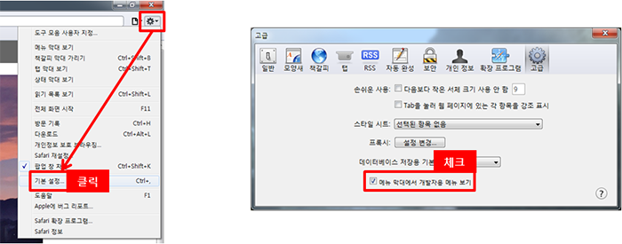
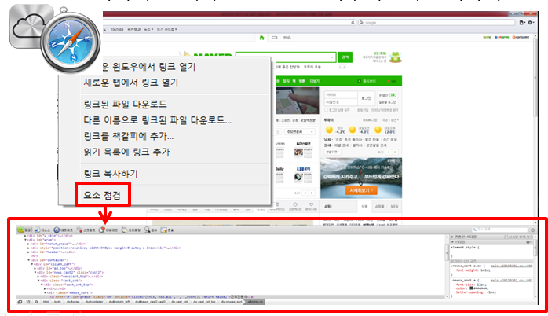

주 메뉴 바로가기
본문 내용 바로가기
사파리, 오페라 설치방법
1. 다운로드
브라우저
Safari
DOWN
Opera
DOWN
설치방법
PPT문서
DOWN
2. 개발자도구 사용팁
1-1) 사파리의 경우 개발자도구를 사용하기 위해서는 설정을 해줘야 함 : [설정아이콘 – 기본 설정…] -> 메뉴 막대에서 개발자용 메뉴보기 체크

1-2) 사파리, 오페라 공통으로 브라우저를 우클릭하여 요소점검을 클릭하면 개발자도구 활성화됨
